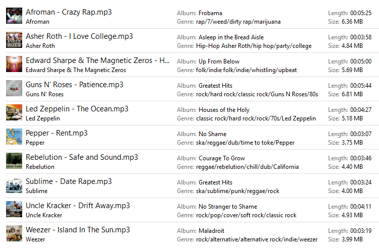

Fonctionnalités de l’application
| Fonctionnalité | Description | |
|---|---|---|
 |
Aucune publicité | Coupe le son et n’enregistre pas les publicités audio |
 |
Couper le son des autres apps | Coupe le son de n’importe quel autre application pendant l’espionnage à Spotify. Les deux apps peuvent être isoler dans un même périphérique audio (carte de son). |
| Bonne qualité audio | Récupère et enregistre avec la même bonne qualité audio que Spotify | |
 |
Normalise le volume | Maximise le volume de votre session audio Spotify pour enregistrer toutes vos chansons au même niveau de volume envoyé par Spotify |
Fonctionnalités de fichier
- Coupe le son enregistré en pistes audio indivudels utilisant les noms de l’artiste et la piste comme titre, comme ceci:
Artiste - Piste.mp3
- Enregistre toutes vos enregistrements sous un même répertoire:
../Ma Musique/
- Ajoute automatiquement les métadonnées de Last.fm (ou par l’API Spotify):
- # piste
- Titre de la piste
- Artiste
- Titre album
- Couverture de l’album
- Genre
